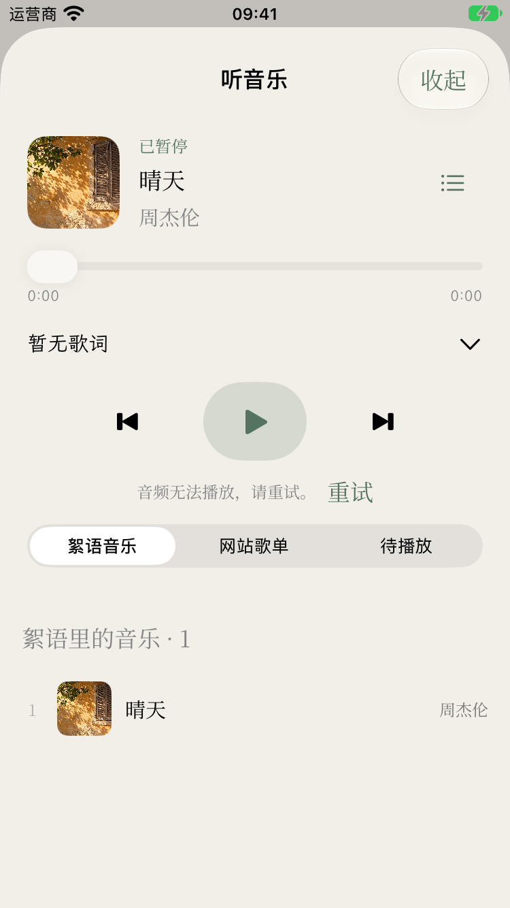
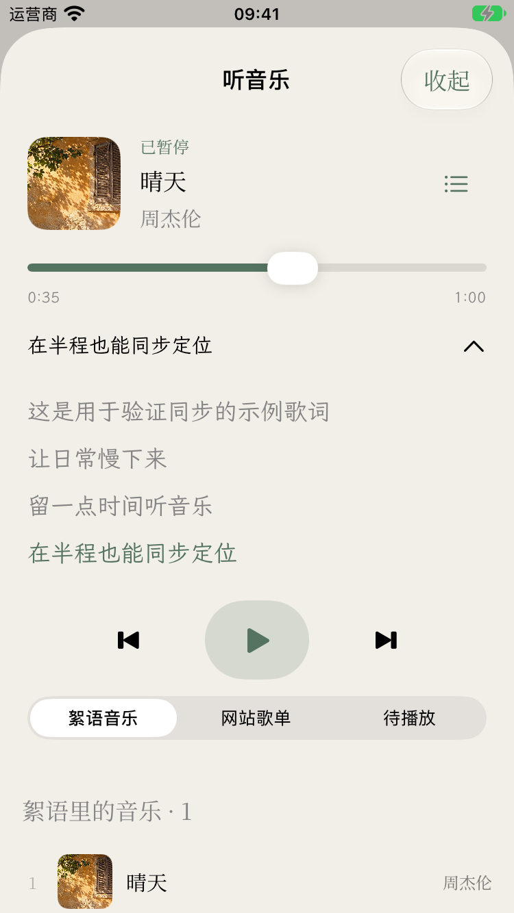
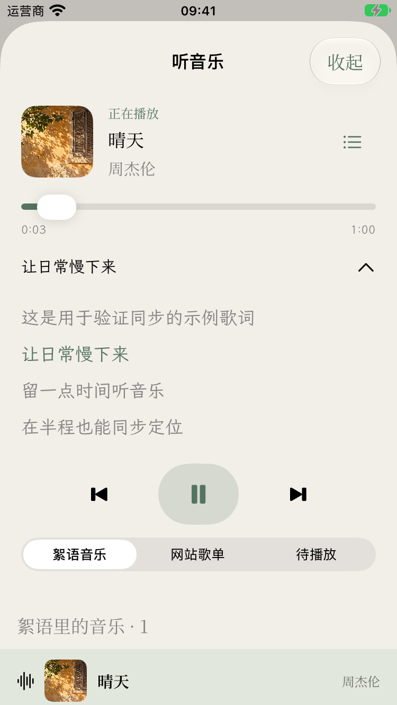
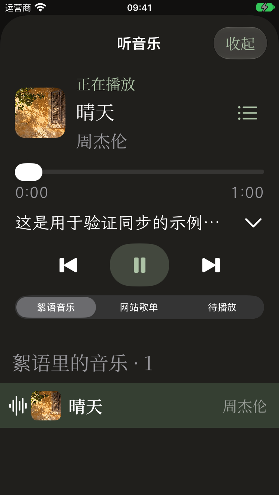
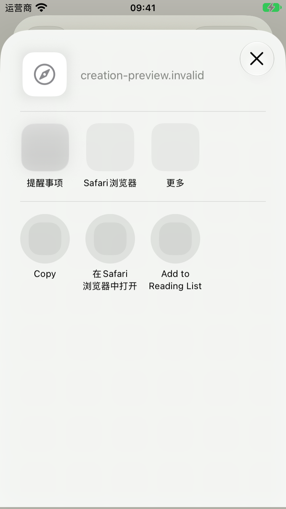
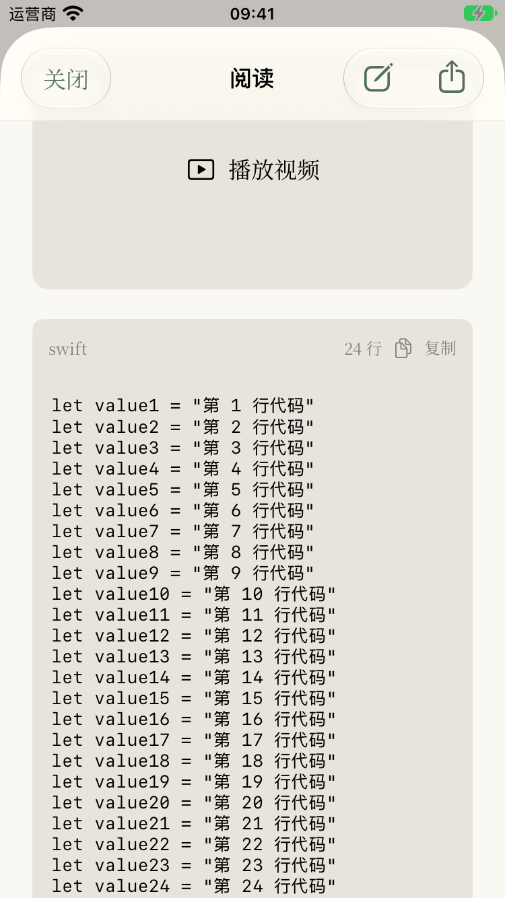
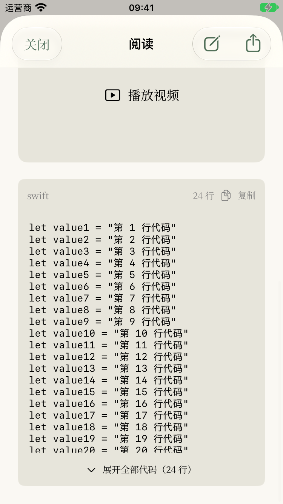

媒体与阅读 · 实际运行截图
2026-10-24。本页为 375pt iOS 模拟器实际运行截图，使用离线测试内容、示例歌词与本地静音音频。播放失败采用不可用音频地址触发，截图不是线上网站数据，也不能替代真机音频与温度验证。

播放失败 · 原生重试入口
暂停后拖动进度 · 歌词同步定位
歌词展开 · 当前行高亮
深色与大字号 · 歌名歌手同排
原生分享面板 · 网站短链接
长代码 · 展开状态
长代码 · 默认折叠文章阅读 · 原生编辑和分享胶囊分享文案识别 · 多个视频手动选择